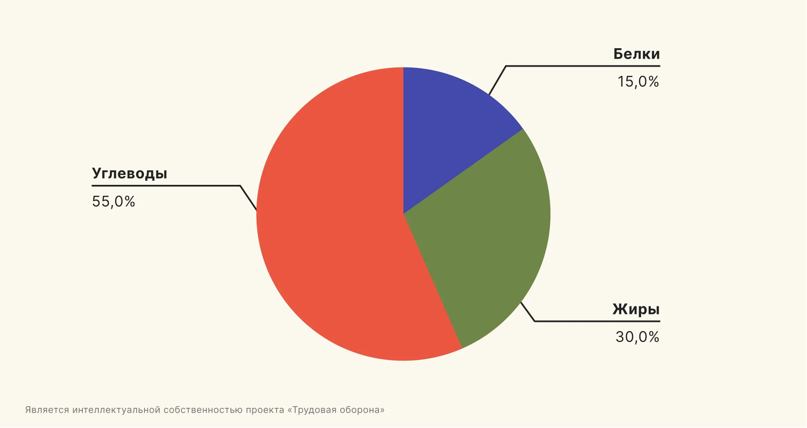
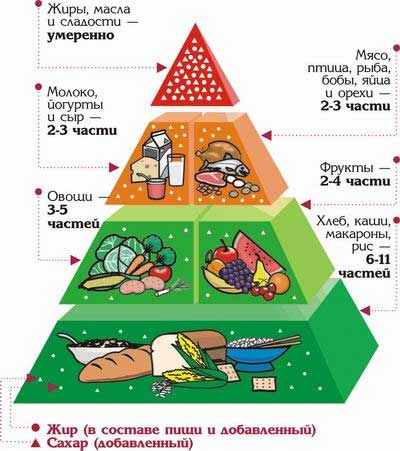

Оптимальное питание
Баланс макронутриентов
Идеальное соотношение по ВОЗ:
- Белки: 15-25% (1.2-1.6г/кг)
- Жиры: 25-35% (ненасыщенные 80%)
- Углеводы: 45-60% (сложные 90%)

Микроэлементы
Критически важные вещества:
- Витамин D: 600-800 МЕ/день
- Омега-3: 1.1-1.6г/день
- Железо: 8-18мг/день
- Кальций: 1000-1200мг/день

Пирамида здорового питания
- Овощи и фрукты (5-9 порций)
- Цельнозерновые продукты
- Белковые продукты
- Молочные продукты
- Полезные жиры
Физическая активность
Силовые тренировки
- Частота: 3-4 раза/неделю
- Подходы: 3-4 на группу
- Отдых: 60-90 сек между подходами
- Примеры: приседания, тяги, жимы
Кардио нагрузки
- Оптимальный пульс: (220 - возраст) × 0.6-0.8
- Продолжительность: 150 мин/неделю
- Методы: интервальные тренировки
"Физические упражнения могут заменить множество лекарств, но ни одно лекарство в мире не может заменить физические упражнения."
- Анжело Моссо
Водный баланс
Нормы потребления
- 30мл на 1кг веса
- +500мл на каждый час активности
- Сигналы жажды: уже обезвоживание
Преимущества гидратации
- Улучшение когнитивных функций на 30%
- Снижение риска камней в почках на 60%
- Ускорение метаболизма на 3%
Формирование привычек
Метод 21/90
21 день на формирование привычки
90 дней на стабилизацию
- Начинайте с малого
- Отслеживайте прогресс
- Система вознаграждений
Цифровая гигиена
- Синий свет: фильтры после 18:00
- Цифровой детокс 1 день/неделю
- Лимит соцсетей: 30 мин/день